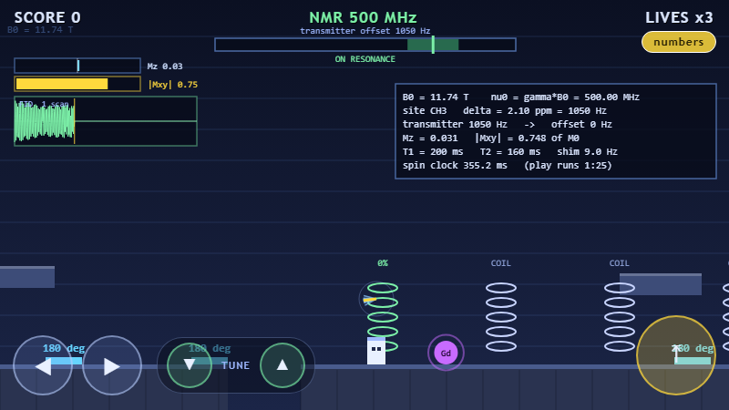
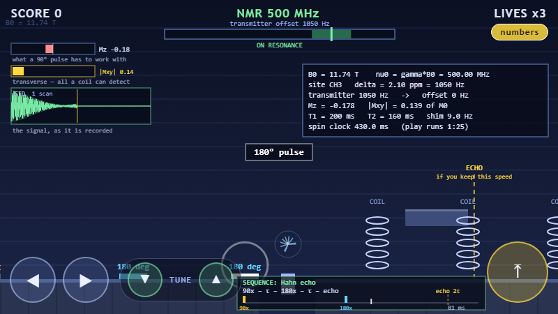
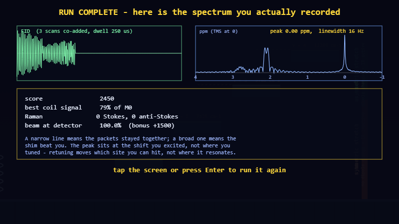

Two physics games
Spin Runner
A spectroscopy platformer. You are the sample: magnetization in a 500 MHz magnet, then a vibrating molecule on the IR and Raman benches, then a beam in the UV-Vis. The spectrum at the end is the Fourier transform of the FID you actually recorded.
▶ Play Spin Runner Free-play sandboxPixel Plumber
The first build: a small Mario-like platformer with a low-gravity zone, a frictionless ice zone and a live readout of the constants behind the jump.
▶ Play Pixel Plumber
Spin Runner — what it is
A side-scrolling platformer built on a real Bloch-equation simulation. The magnetization is carried by 64 independent spin packets, each a 3-vector stepped through precession and relaxation every frame. Nothing about the spin physics is animated by hand: dephasing, the echo, and the spectrum on the results screen all fall out of that simulation, which is why they agree with the closed-form answers to two or three digits (table below).
Six stages walk through a spectroscopy lab. The sample is deliberately doped
(T1 = 200 ms, T2 = 160 ms) so relaxation happens on a timescale you can play
with, and the whole simulation runs at 1:25 slow motion so a millisecond of spin time is visible.
Stages 1–3 · in the magnet
- Resonance.
ν = γB₀= 500.00 MHz at 11.74 T. Gates open only while the transmitter sits on the local Larmor frequency, so walking into a new chemical environment (0.00 ppm → 2.10 ppm, i.e. 1050 Hz at this field) means retuning before anything works. - Pulses and T1. A 90° pad rotates Mz into the plane, and that transverse
magnetization is the only thing a coil can detect. Mz then returns as
M0(1 − e^(−t/T1)), so pulsing again too soon leaves nothing to detect — the recycle delay, learned the hard way. - T2* and the echo. One patch is badly shimmed (packets spread over ±9 Hz). The packets fan out on the dial above your head, the signal dies at T2* rather than T2, and a 180° pad mirrors the fan so it winds back together. Run through the coils at the echo and you collect the signal you had already lost.
- Paramagnetic ions. Touching a Gd³⁺ crushes your coherence — relaxation enhancement, the same effect that makes contrast agents work.
Stages 4–6 · the rest of the bench
- IR. The rungs sit at
E(v) = ω(v+½) − ωx(v+½)², so they close up as you climb — 2880, 2760, 2640, 2520 cm⁻¹ apart. Your jump clears exactly one rung and never two: theΔv = ±1selection rule, enforced by gravity. At the end, two doors: the symmetric stretch changes no dipole moment and never opens, the asymmetric one does. - Raman. Photons scatter off you. From v = 0 only Stokes is available; arrive
still vibrating and you scatter anti-Stokes, worth far more — because at 300 K the thermal
population ratio is
N₁/N₀ = e^(−ω/kT) ≈ 5.6 × 10⁻⁷, which is exactly why anti-Stokes lines are weak unless something pumped the molecule first. - UV-Vis. Three lanes, three cuvettes,
A = εclandT = 10^(−A). The clear sample is the highest climb.

How it explains itself
The first version of this hid the physics behind a platformer: you jumped on a pad and something happened to a dial, with no way to tell what any of it stood for. Four changes fixed that, and they are the part worth keeping.
- Every stage is named as the real experiment. Stage 2 is titled
SINGLE-PULSE ACQUIRE · 90x – acquire, stage 3 isHAHN ECHO · 90x – τ – 180x – τ. If you know the sequence from the bench, you know what the stage wants before you read anything else. - A live pulse programme. A strip along the bottom draws the pulses you have fired on a time axis and names what they add up to — single-pulse acquire, Hahn echo, CPMG, inversion recovery — and marks where the refocus is due. It is the same diagram a spectrometer manual prints, built from your own play.
- Every panel says what it is. One line under each: the Mz bar is what a 90° pulse has to work with, the Mxy bar is transverse, all a coil can detect, the dial is each spoke is a spin packet, the bright arrow is their sum.
- Hints that stop and point. The first time each idea matters, the game pauses,
dims everything except the thing in question, and explains it in two sentences. They fire only
when you are on the ground, never mid-jump, and
Tturns them off for good.
There is also a free-play sandbox: the same engine with the lid off, no goals, sliders for T1, T2, shim and offset, and one-click buttons for the four named experiments. It is the version to put on a projector.

What was verified
Everything below was measured by driving the deployed game from a scripted headless browser (Playwright) through read-only hooks, then compared against the closed-form result — not read off the source and hoped for.
| Check | Predicted | Measured | |
|---|---|---|---|
| Spin-echo peak time 2τ − 1/(4π²σ²T2), with τ = 20 ms and σ = 5.4 Hz |
34.6 ms | 35.0 ms | ✓ within one sample |
| Spin-echo peak amplitude e^(−t/T2) times the residual dephasing at that instant |
0.792 M0 | 0.791 M0 | ✓ 0.1% |
| Peak positions in the recorded spectrum FFT of the co-added FID, referenced to TMS |
0.00 and 2.10 ppm | 0.00 and 2.10 ppm | ✓ exact |
| Effect of the shim on linewidth ±1.5 Hz patch vs. ±9 Hz patch |
badly shimmed site is broader |
15.6 Hz vs 33.2 Hz | ✓ 2.1× broader |
| Beer–Lambert through the middle cuvette A = εcl = 0.59, T = 10^(−A) |
25.5% | 25.5% | ✓ exact |
The echo one is worth a second look. The naive answer is that the echo arrives at 2τ = 40 ms, and the
simulation said 35 ms — which looked like a bug until the algebra was done properly. The refocusing
envelope does peak at 2τ, but it is multiplied by a falling e^(−t/T2), so the observed
maximum sits 1/(4π²σ²T2) = 5.4 ms earlier. The simulation was right and the first
prediction was wrong.

Pixel Plumber — the first build
A small Super-Mario-like platformer in plain canvas, kept here because it is where the physics-zone idea started: a low-gravity zone (g: 2200 → 650 px/s²), a frictionless ice zone (friction: 1600 → 130 px/s²), a dotted trail tracing the actual parabola, and a toggleable readout of the constants.
| Check | Predicted | Measured | |
|---|---|---|---|
| Full jump apex, h = v₀²/2g | 105.1 px | 99.5 px | ✓ ~5% |
| Short-tap apex (jump-cut), two-phase | ≈76.9 px | 75.9 px | ✓ ~1% |
| Ice vs normal coast distance, ratio 1600/130 | ≈12.3× | ≈10.9× | ✓ ~11% |
The few-percent undershoot is the discrete ~16 ms integration step (semi-implicit Euler) losing a little height against the continuous solution.
Built with
Plain HTML5 canvas, CSS and JavaScript — no engine, no dependencies, no build step. The spin physics
lives in spin/bloch.js, shared by the game and the sandbox so there is only one
implementation to trust, and it carries its own radix-2 FFT. Built and verified with Claude Code.